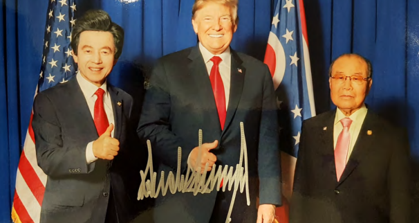

허경영과 미국 대통령 트럼프의 만남은 사실이다!▶트럼프-허경영 만남이 조작이라는 SBS의 거짓 보도!
(The meeting between Huh Kyung-young and U.S. President Trump is true!
▶A false report by broadcaster SBS that the Trump-Huh Kyung-young meeting was a lie)
SBS의 허위보도에 대한 허경영의 강경 대응 예고 동영상^ㅇ^
A video clip that heralds a tough response by Huh Kyung-young to SBS's false report
♥Watch this Youtube video with English subtitles(other language is also provided)
♥Click on the English subtitle settings in the order 'Settings→Subtitles→English'
(Other language is also provided: 'Settings→Subtitles→Your language')
*'Subtitles'='자막'
'English'='영어'
트럼프와 허경영과 임청근이 같이 찍은 사진(a picture taken with Trump&Huh Kyung-young & Lim Chung-geun)

트럼프가 허경영에게 보낸 초청장(an invitation card from Trump to Huh Kyung-young)